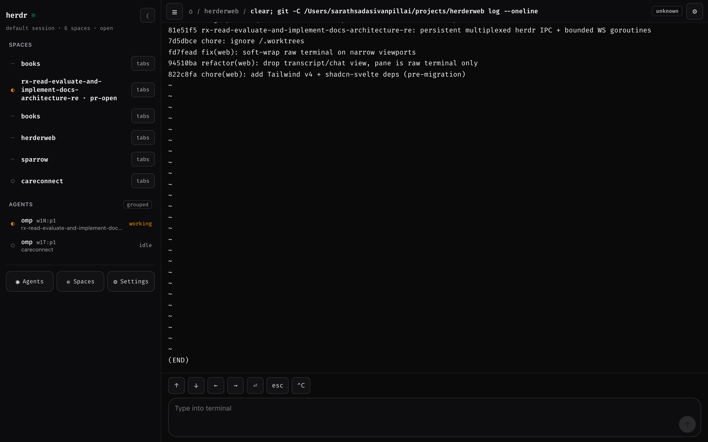
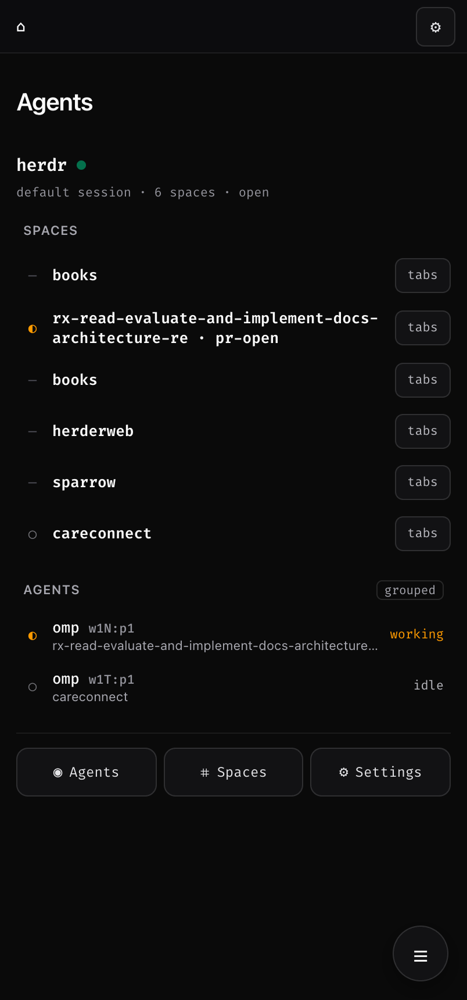
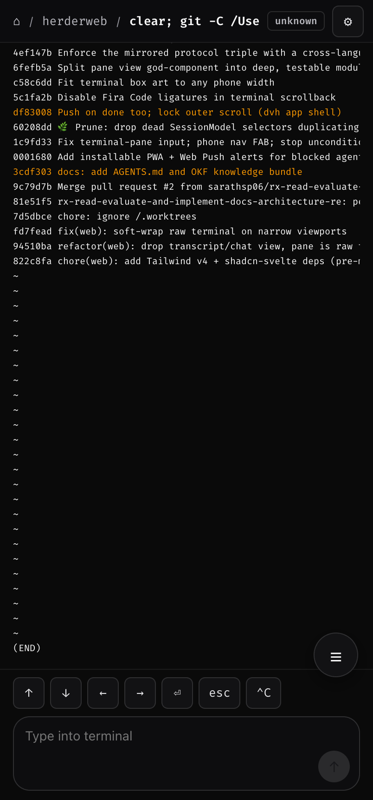
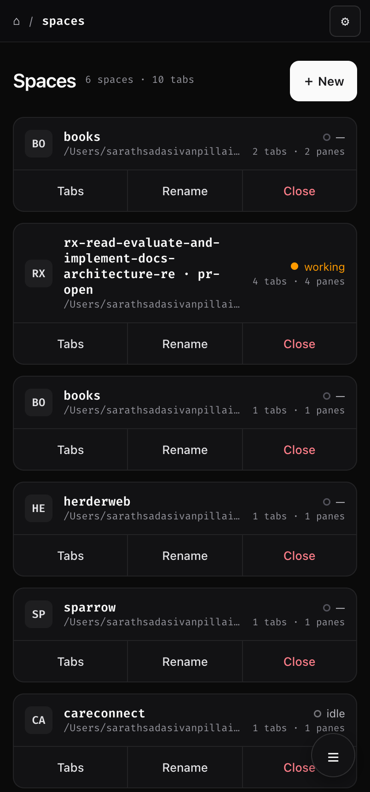
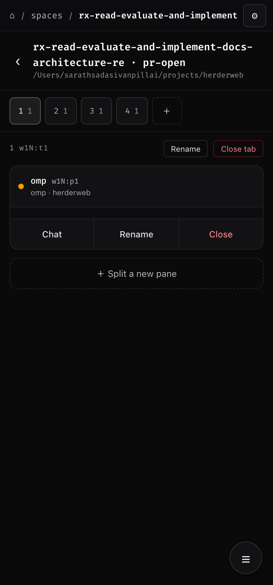
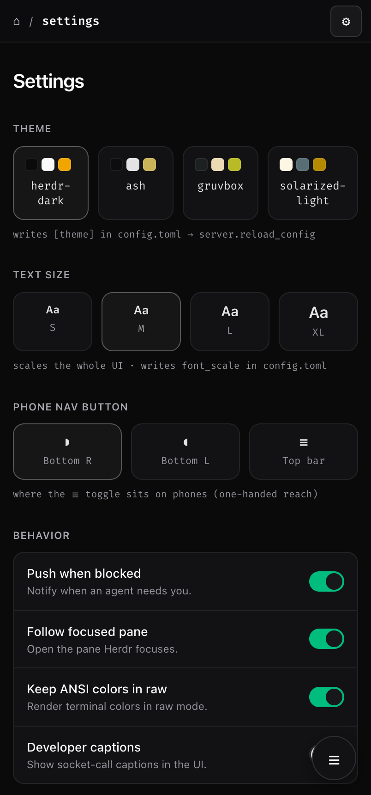

Herdr Web is a single-operator web client for Herdr, the terminal/agent multiplexer. It flips the model: agents, not terminals, are the primary objects. The home screen lists every agent across your spaces and floats the ones that are blocked to the top — so babysitting a fleet becomes reading a feed, from any device.
curl -fsSL https://raw.githubusercontent.com/sarathsp06/herdrweb/main/install.sh | sh
one binary, linux & macOS, no runtime deps — all install methods →
the mental model
Herdr already knows which agent is stuck. Herdr Web surfaces that: every agent's state is carried by glyph shape, colour, and a word — never colour alone — and blocked agents sort first. The colours below mean exactly one thing wherever they appear on this page.
The bridge is a thin pass-through: the frontend calls Herdr socket methods directly
(pane.read,
agent.prompt,
agent.send_keys) — no terminal
emulator pretending to be a web page.
what it does
Read scrollback, answer a yes/no, nudge with a prompt, review a diff, get told when something changes. Reliably, from a phone.
Every agent across every space in one list, blocked ones on top. Tap in for raw scrollback; it's one tap away but never the default. A grouped/flat toggle keeps big fleets legible.
raw panes
Terminal output via pane.read, auto-fit to any phone width, follow-on-new-output, and a key row: ↑ ↓ ⏎ esc ⌃C.
composer
Routes by pane kind — agent panes use agent.prompt + send_keys, plain terminals use pane.send_text.
review
Syntax-highlighted diffs with a per-file chip strip, soft-wrap toggle, and add/remove row tints — approve a change from the couch.
PWA + push
Add to home screen; get a Web Push the moment an agent blocks or finishes, even with the app closed.
screens
Captured against a live bridge. Append ?fixtures=1 to any URL to explore the mocked dataset with no live Herdr server.






honest scope
If you need a real TUI in a browser tab, this is the wrong tool — and that's fine. Knowing the boundary is the point.
| Herdr Web | SSH on a phone | kcosr/herdr-web | |
|---|---|---|---|
| Agent-status inbox | yes | no | no |
| Push when blocked or done | yes | no | no |
| Phone-first, thumb-friendly | yes | painful | yes |
| Read scrollback, answer y/n | yes | yes | yes |
| Full TUI (vim, htop, multi-host) | no | yes | yes |
| Single self-contained binary | yes | n/a | no |
Need a real terminal? Use SSH, or kcosr/herdr-web — a full Ghostty/WASM terminal in the browser. Just need to know your agent is stuck and tap a button about it? That's this.
get running
Install the binary, then run it on loopback, as a background daemon, or as a managed system service.
curl -fsSL https://raw.githubusercontent.com/sarathsp06/herdrweb/main/install.sh | sh
herdr-bridge # serves http://127.0.0.1:7331
herdr-bridge -daemon \ -log-file ~/.config/herdr/herdr-bridge.log \ -pid-file ~/.config/herdr/herdr-bridge.pid
herdr-bridge -service install # systemd / launchd
herdr-bridge -service start
herdr-bridge -service status
open http://127.0.0.1:7331 # live spaces, panes, agents
Loopback by design. The bridge binds 127.0.0.1:7331
only. Expose it over a private network such as a
tailnet; never bind 0.0.0.0.
The UI is an installable PWA. Push needs a secure context, so front the loopback bridge with HTTPS — the easy path is Tailscale. Then Add to Home Screen and enable push per device.
tailscale serve --bg --https=443 127.0.0.1:7331 # open https://<machine>.<tailnet>.ts.net, Add to Home Screen, # then Settings → Push when blocked (enrol on the phone itself)
from source
The UI is go:embeded, so
make build — not
go build — is what refreshes it.
make build # build the SPA, embed it, compile -> bin/herdr-bridge make run # build + run on http://127.0.0.1:7331 make dev # Vite dev server (HMR), proxies /ws + /api to :7331 make check # go vet + svelte-check + Go and Vitest tests
Serves the UI, /ws and /api; proxies the Herdr socket.
Canonical Go types and the Herdr snapshot → UI normalization.
Socket client: framing, snapshot, event subscribe, reconnect.
Hub: one Herdr connection, WebSocket fan-out, periodic re-snapshot.
The go:embed of the built SvelteKit assets.
SvelteKit + TypeScript front end; protocol types mirror the Go structs.
give your fleet an inbox
Your agent CLIs keep running exactly as they do now — Herdr Web just puts every one of them in a single inbox you can read from any device.
curl -fsSL https://raw.githubusercontent.com/sarathsp06/herdrweb/main/install.sh | sh
linux & macOS — all install methods → · prebuilt releases →